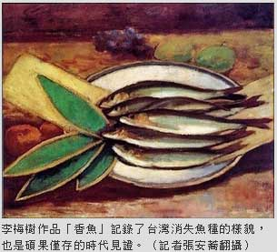
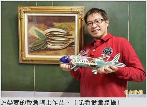

〈台北都會〉
三峽梅樹月 百件香魚向大師致敬
張安蕎｜自由時報／新北都會生活∣2015年4月15日
多位名家用藝術復育
三峽藝文活動「梅樹月」是地方盛事，今年展覽「年年有魚」以李梅樹一九三八年的油畫作品「香魚」為主軸，邀請多位藝術家以各種型態的香魚作品向大師致敬，不管是油畫、素描、木板或陶瓷，展場內集結了近百隻香魚，要用藝術「復育」台灣香魚，也希望喚起環境省思。
李梅樹紀念館執行長李景文表示，台灣原產的香魚，是老一輩人最懷念的食物，三峽溪常可捕捉，李梅樹生前也最愛吃香魚，可惜河川污染後，就再也找不到原生種了，李梅樹這幅「香魚」，為我們記錄了台灣消失魚種的樣貌，也是碩果僅存的時代見證。
參展者包括知名作家劉克襄，獻出了親筆手繪的香魚素描；金屬造型藝術家江承堯，打造多隻「鋼鐵飛魚」；藝術家蔡東原以三峽老街回收的木料，繪製出鮮豔可愛的香魚；鶯歌國中學生也捏製了陶瓷魚，表現出魚群悠游的歡樂姿態。
陶藝家許晏豪則利用陶土「烤」了兩尾特大號Ｑ版香魚，魚身刻劃了拱橋、鳶山、老厝等在地元素，並燒製了九十多隻熱帶小陶魚，營造繽紛熱鬧、「海底總動員」的意象，令人目不暇給。
甘樂文創展至26日止
許晏豪說，他花了三個多月時間，才燒製完這麼多隻陶魚，且台灣原生香魚的照片不多，他只能依照李梅樹及劉克襄的畫作，揣摩香魚的面貌，並將之立體化，希望這次的展覽，能凸顯出保育生態及河流的議題。
展覽「年年有魚」即日起在三峽甘樂文創展出，展期至四月廿六日止。